How to Git
Einführung
Dieses Statistik Skript soll dir die Möglichkeit geben, die Welt von Git und Github näher kennenzulernen.
Zuest werden dir die wichtigsten Tools und Begriffe erklärt:
Git
Git ist ein verteiltes Versionskontrollsystem, das zur Nachverfolgung von Änderungen im Quellcode während der Softwareentwicklung verwendet wird. Es ermöglicht mehreren Entwicklern die Zusammenarbeit an einem Projekt, die Verwaltung verschiedener Codeversionen und die Verfolgung von Änderungen im Laufe der Zeit. Git ist bekannt für seine Geschwindigkeit und Effizienz.
Github
GitHub ist eine webbasierte Plattform, die Hosting für Git-Repositories bereitstellt. Es bietet Tools für die Zusammenarbeit, Codeüberprüfung und Projektverwaltung. GitHub wird von Entwicklern weit verbreitet genutzt, um Open-Source-Projekte zu teilen, dazu beizutragen und zusammenzuarbeiten. Es bietet auch Funktionen wie die Verfolgung von Problemen (Issues) und Pull-Anfragen (Pull Requests).
R / Quarto
R ist eine Programmiersprache und Umgebung, die für statistische Berechnungen und Grafiken verwendet wird. Sie ist bei Datenanalysten und Statistikern sehr beliebt. Quarto ist ein Werkzeug, das in der R-Entwicklungsumgebung eingesetzt wird, um dynamische Dokumente, Berichte und Präsentationen zu erstellen. Es ermöglicht die Generierung von Dokumenten in verschiedenen Formaten, einschliesslich HTML und PDF, indem Code, erzählender Text und Visualisierungen kombiniert werden. R und Quarto werden oft für Datenanalysen und reproduzierbare Forschung verwendet.
Codespaces
GitHub Codespaces ist eine Online-Entwicklungsumgebung, die es Entwicklern ermöglicht, direkt im Webbrowser zu programmieren. Es bietet eine integrierte Entwicklungsumgebung (IDE) mit Funktionen wie Codebearbeitung, Debuggen und Tools für die Zusammenarbeit. Codespaces können genutzt werden, um an GitHub-Projekten zu arbeiten, ohne eine lokale Entwicklungsumgebung einrichten zu müssen.
Setup
1. Registration
Registriere dich mit deiner persönliche E-Mail Adresse auf Github.
2. Fork
Erstelle ein Fork des bestehenden Statistik Repository.
Klicke auf der Repository Seite auf den Fork Button. Wähle anschliessend dein Account als Owner. Du kannst alternativ noch den Namen ändern und eine Beschreibung hinzufügen.
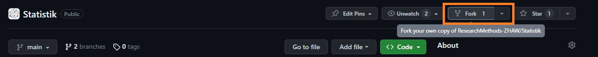
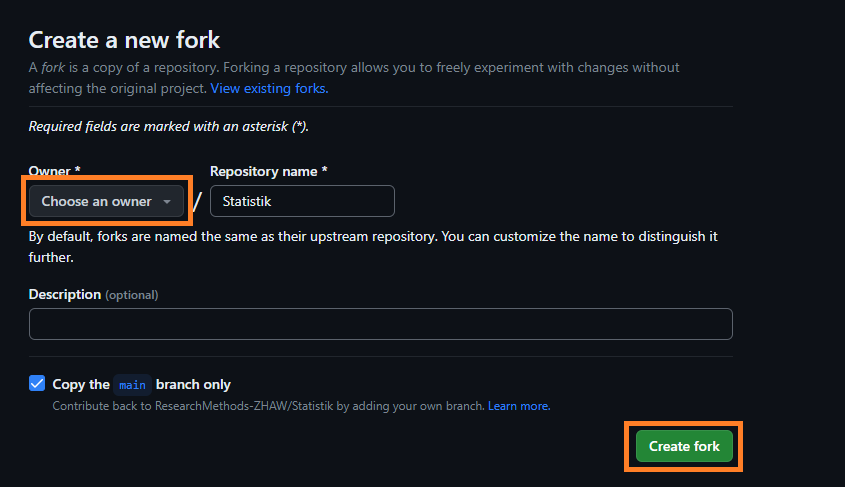
3. Codespaces
Erstelle ein neuer Codespace Container aus dem Repository indem du oben Links auf das 3 Linien klickst und beim geöffneten Menü die Codespaces auswählst. Wähle die Option “Neuer Codespace” aus und folge den Anweisungen. Wähle dein Repository aus und klick auf “Create Codespace”.

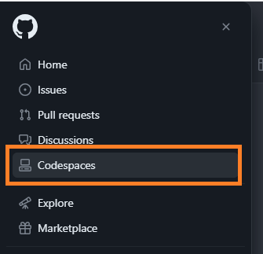
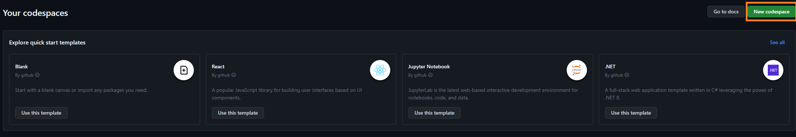
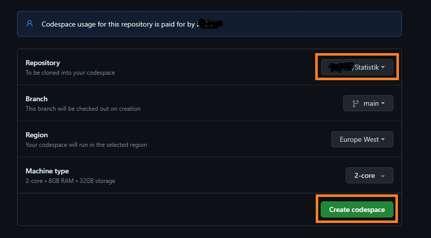
Codespace verwendet as Standard Entwicklungsumgebung (IDE) Visual Studio Code. Wie die Benutzeroberfläche aufgebaut ist, kann hier nachgelesen werden.
4. Quarto
Damit ihr euer Projekt mit Quarto darstellen im Webbrowser darstellen könnt, müsst ihr folgende Befehle im Terminal beherrschen.
Render: quarto render
Dieser Befehl wird verwendet, um Ausgaben (z. B. HTML, PDF oder andere Formate) aus einem Quarto-Dokument zu generieren. Er nimmt das Quarto-Quelldokument, verarbeitet es und erstellt das angegebene Ausgabeformat.
Zum Beispiel, wenn du ein Quarto-Dokument im R-Markdown-Format hast und einen HTML-Bericht daraus generieren möchtest, würdest du den Befehl quarto render verwenden und die Eingabedatei sowie das gewünschte Ausgabeformat angeben. Der Befehl könnte wie folgt aussehen: quarto render index.qmd --to=html.
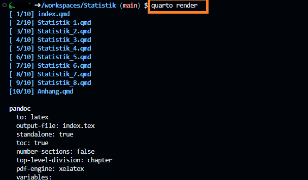
Es ist möglich das bei der ersten Ausführung ein Fehler bezüglich fehlenden Packages auftritt. Folge einfach den Anleitung in der Konsole um die zusätzlichen Packages zu installieren (z. B. wie im nachfolgenden Bild) und führe quarto render nochmals aus.
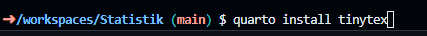
Preview: quarto preview
Der Befehl quarto preview wird verwendet, um eine live, interaktive Vorschau deines Quarto-Dokuments im Webbrowser anzuzeigen. Du kannst sehen, wie das Dokument aussehen wird, wenn es gerendert wird, ohne die endgültige Ausgabe tatsächlich zu generieren.
Du kannst quarto preview gefolgt von der Eingabedatei (z. B. quarto preview index.qmd) ausführen, um eine dynamische Vorschau in deinem Browser anzuzeigen. Dies ist nützlich, um das Layout, das Erscheinungsbild und die Funktionalität deines Dokuments zu überprüfen, während du daran arbeitest.
Wenn ihr den Befehl ausführt, erscheint ein Popup unten rechts. Mit einem Klick auf “Im Browser öffnen” wird eure Vorschau im Browser dargestellt. Dieser Preview aktualisiert sich automatisch, wenn ihr neue Änderungen vornehmt. Mit Ctrl + C könnt ihr in der Konsole den Preview wieder beenden.
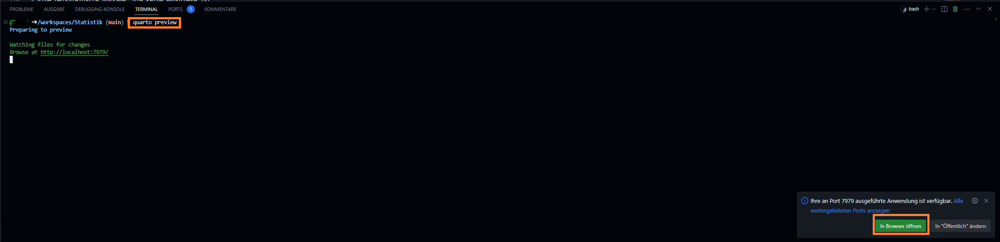
Publish: quarto publish gh-pages
Dieser Befehl wird verwendet, um dein Quarto-Dokument auf einer GitHub Pages-Website zu veröffentlichen. GitHub Pages ist ein Hosting-Dienst für Webinhalte direkt aus GitHub-Repositories.
Wenn Du quarto publish gh-pages ausführst, wird Quarto dein Dokument als Website auf GitHub Pages veröffentlichen. Es wird einen speziellen Branch namens gh-pages in deinem GitHub-Repository erstellen und die gerenderten HTML-Dateien sowie zugehörige Ressourcen in diesen Branch hochladen. Dadurch wird dein Dokument als Website auf GitHub zugänglich.
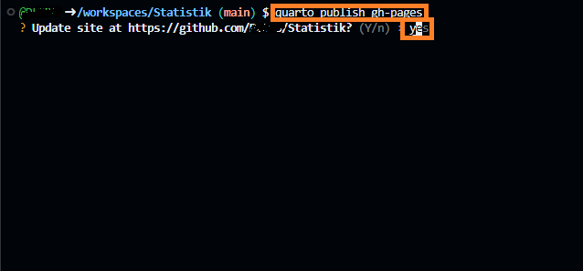
5. Link anpassen
Nach dem Ausführen des publish Befehls kannst du zurück in den Repository auf Github. Klicke da auf Settings und wähle den Tab Pages. Darin siehst du nun den Link wo dein persönliches Statistik Script läuft. Kopiere den Link und kehre zur Hauptseite zurück indem du den Tab “Code” oben Links auswählst.
Passe nun den Link im About an, indem du das Zahnrädchen neben dem About auswählst und die kopierte URL bei Website einsetzt. Somit kannst du immer über diesen Link auf die Webseite zugreifen.
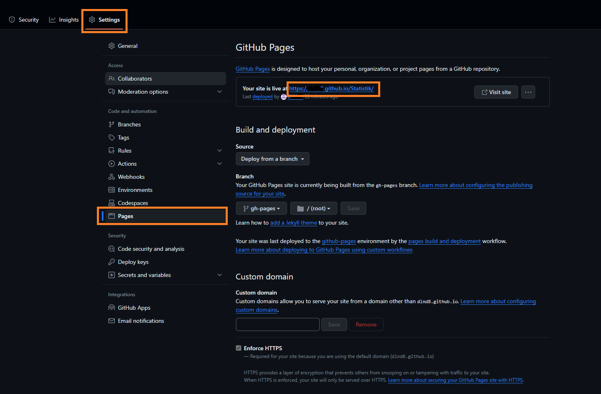
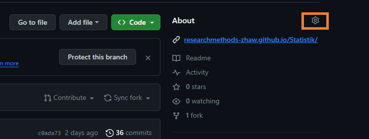
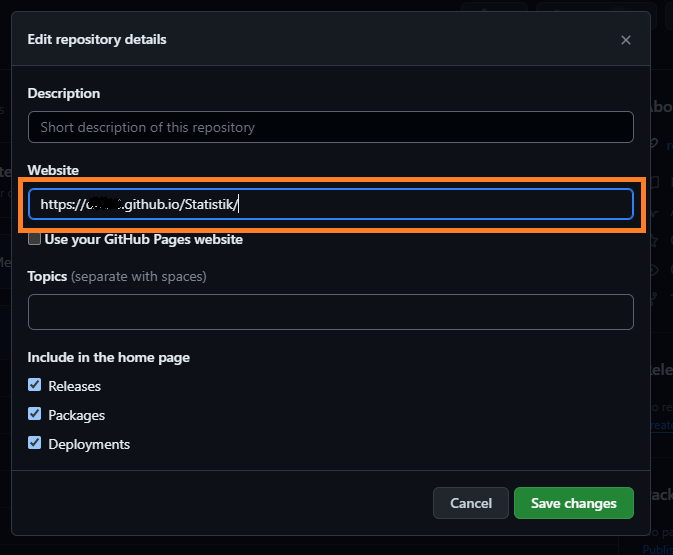
Workflow
Jetzt wo du dein Projekt richtig aufgesetzt hast, kannst du folgenden Workflow verwenden um dein Script nach deinen Belieben anzupassen.
Pull neuste Changes aus dem Main Repository
Es ist möglich das am Script Änderungen vorgenommen wurden. Mit einem Pull kannst du die neusten Changes in dein Repository laden. Dies muss zuerst in Github und dann in deinem Codespace gemacht werden.
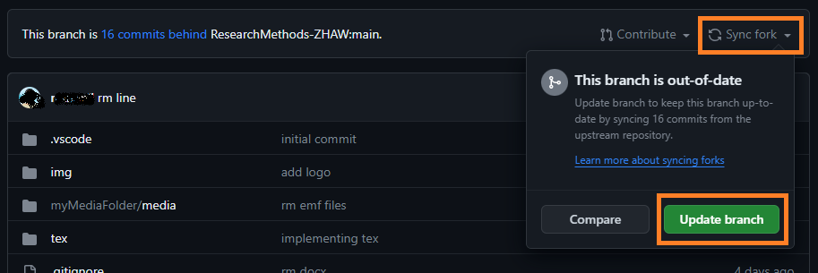
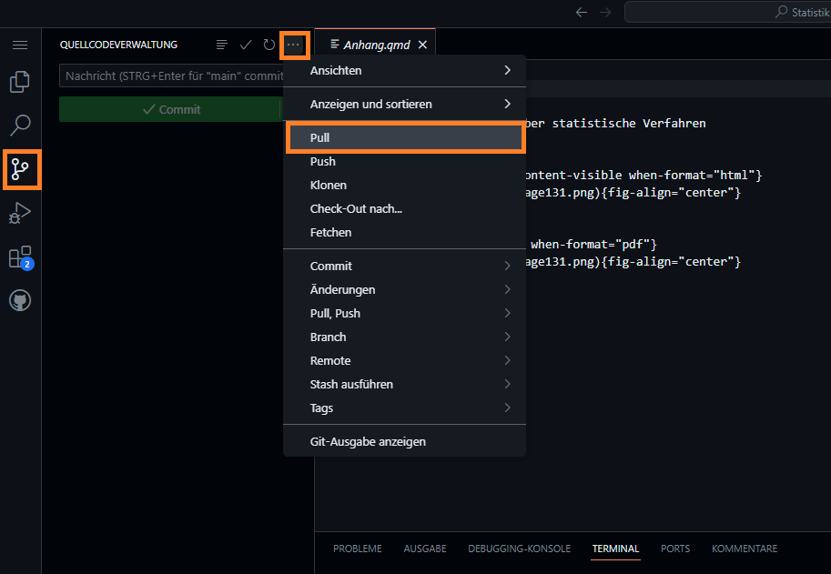
Führe deine Changes durch
Mehr Informationen zu Quarto findest du hier.
Render, Preview und Publish
Mithilfe der Commands kannst du deine Changes rendern und vorgängig anschauen. Wenn du zufrieden bist kannst du die änderungen wieder publishen.
Commit und Push
Damit deine Änderungen nicht nur “lokal” auf deinem Codespace gespeichert sind, kannst du diese Commiten und dann auf Github pushen.
- Commit: Ein
commitist eine grundlegende Aktion in Git, bei der du deine Änderungen im Quellcode-Repository festhälst. Es ist wie das Speichern eines Snapshots oder einer Version deines Codes zu einem bestimmten Zeitpunkt. - Push: Der Befehl
pushwird verwendet, um deine lokalen Commits an ein gehostetes Git-Repository hochzuladen, normalerweise auf einer Plattform wie GitHub oder GitLab.
Klicke Links auf Quellcodeverwaltung. Füge deine Änderungen, die du Commiten willst mit dem + hinzu. Wenn du alles Files hinzugefügt hast, klicke auf den Commit Button, Es öffnet sich ein neues File, wo du deine Commit Message eingeben musst. Am besten gibst du da ein möglichst aussagekräftigen Kommentar ein. Mittels des Häckens oben Rechts kannst du dein Code Commiten. Wähle anschliessend die drei Pünktchen oben links und wähle “Push” aus. Nun wurde deine Commits nach Github gepushed.
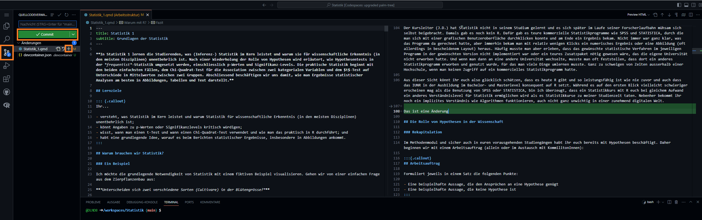
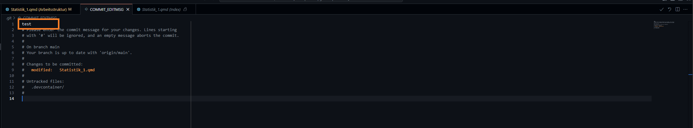
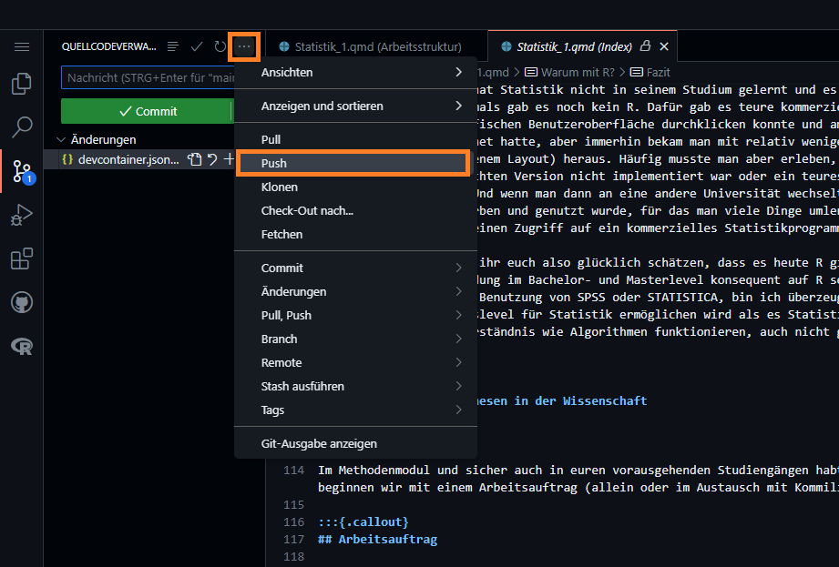
- Commit: Ein
(Optional: Erstelle ein Merge Request für Changes am Main Repository)
Falls du das Gefühl hast, das deine Änderungen relevant für das Main Repository sind, kannst du diese als Merge Request über Github ans Haupt-Repository senden.
Hierfür kannst du auf der Hauptseite deines Repos den Contribute Link anklicken und anschliessend “Open pull request” auswählen. Anschliessend kannst du einen Namen und eine Beschreibung hinzufügen. Weiter unten findest du deine Commits und alle Änderungen welche mit diesem Merge Request übermittelt werden. Klicke auf “Create pull request” um die Anfrage abzusenden.
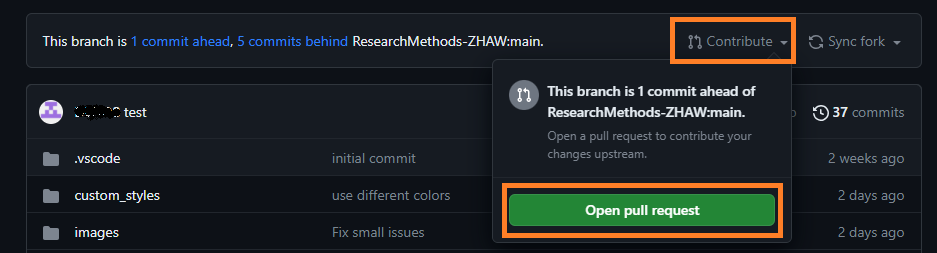
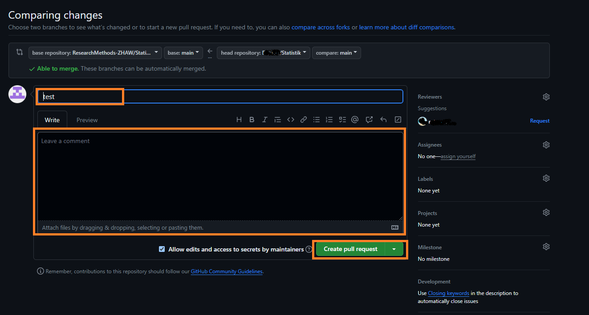